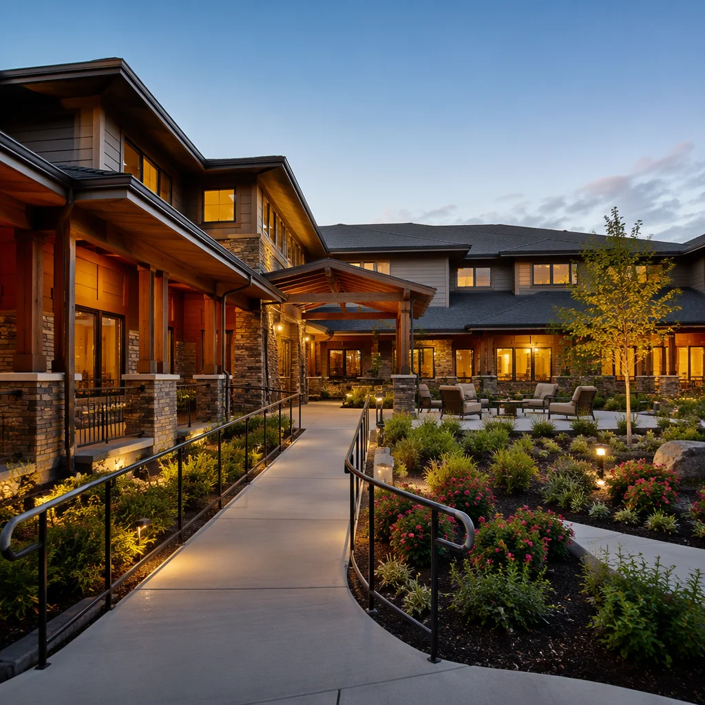
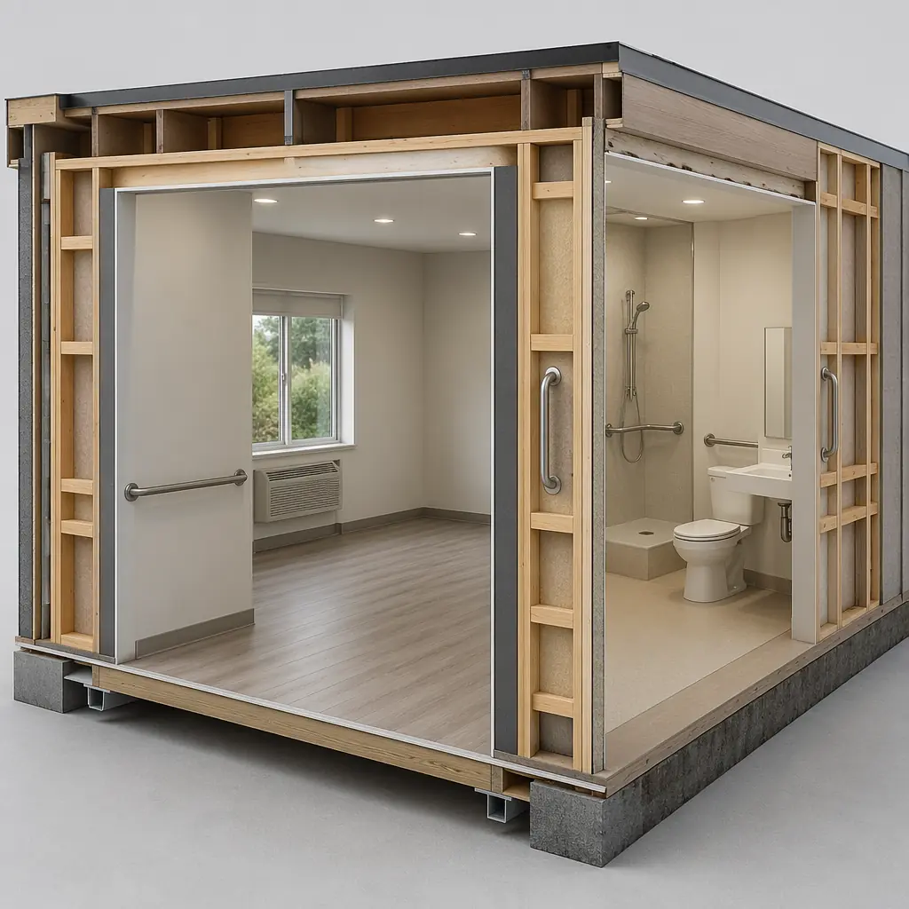
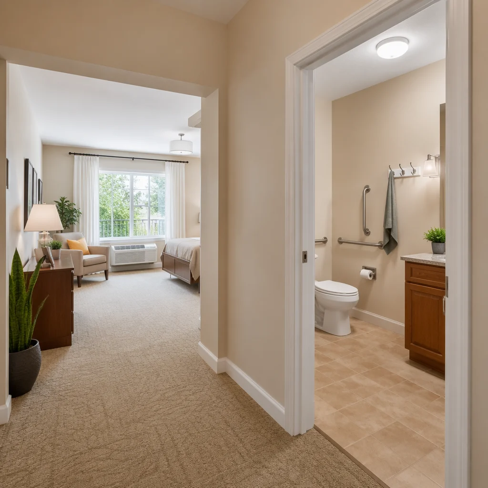
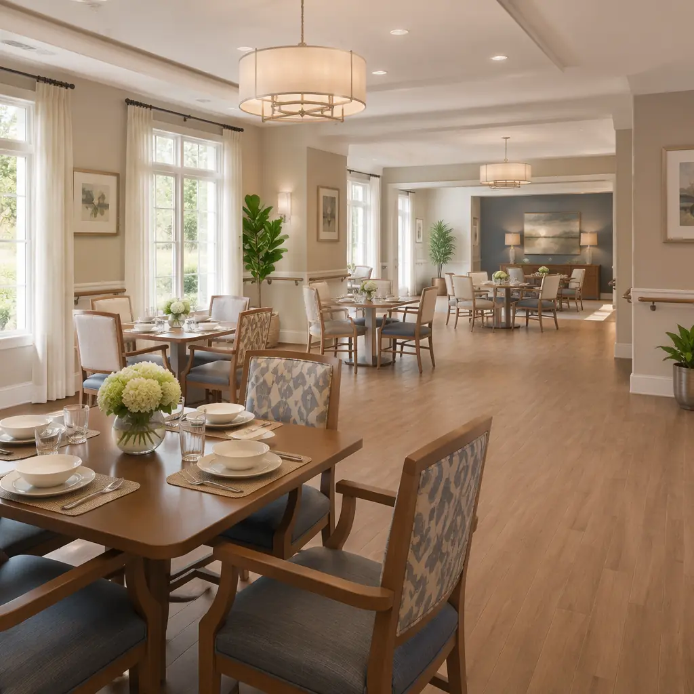

By 2030, one in five Americans will be over 65 — a demographic shift that demands 800,000+ new senior housing units across the US alone. Traditional construction, with its 24–36 month timelines for a typical 120-unit assisted living facility, cannot meet this demand fast enough. Modular construction is emerging as the structural answer: delivering senior living communities in 14–20 months, at 15–20% lower construction cost, and with built-in design features that traditional methods struggle to match.

Why Modular Construction Fits Senior Living
Senior living facilities share three structural characteristics that make them ideal candidates for modular construction:
Repetitive unit layouts. Assisted living facilities are built around repeating room types: studio units (~350 sqft), one-bedroom units (~500 sqft), and two-bedroom companion suites (~700 sqft). Each requires the same MEP rough-ins, the same accessibility clearances, and the same bathroom configuration. This repetition is the sweet spot for factory production — each module becomes a precision-manufactured unit, not a one-off field build.
Regulatory complexity that factory QA solves. Senior living facilities must comply with ADA accessibility standards, NFPA 101 Life Safety Code provisions for healthcare occupancies, and state-specific assisted living regulations governing corridor widths, door clearances, grab bar placement, and emergency call systems. In traditional construction, these requirements are verified through on-site inspections — where a missed grab bar anchor or a door clearance short by half an inch triggers rework and delay. In a modular factory, every unit is inspected at multiple quality gates before it leaves the production line. The result: near-zero deficiency punch lists at occupancy.
Operator demand for speed-to-revenue. A 120-unit assisted living facility at 85% occupancy generates approximately $5.2M–$6.8M in annual resident revenue. Opening 12 months earlier captures an additional $5–$7M that a traditional build would leave on the table. For operators managing portfolios of 10–50 facilities, the compounding effect of faster openings transforms balance sheets.

Design Features That Modular Delivers Better
Senior living design is not just apartment design with grab bars. It requires a specific set of spatial and systems decisions that modular construction addresses systematically:
Accessibility by Default, Not Afterthought
ADA-compliant bathrooms require 60-inch turning radii, 32-inch clear door openings, and reinforced walls at grab bar locations — requirements that are expensive to retrofit and trivial to build correctly in a factory. MODURA's factory production integrates blocking at every grab bar anchor point during wall assembly, routes plumbing for roll-in showers with zero-threshold entries, and pre-installs ceiling track systems for patient lifts. These are not upgrades — they are the baseline specification.
Corridor Width and Evacuation Design
NFPA 101 requires 8-foot corridor widths in healthcare occupancies to allow two patient beds to pass during evacuation. Traditional construction often compromises on corridor width to maximize unit count — and faces plan-check rejection or costly redesign. Factory production uses fixed jigs and templates that lock in corridor dimensions at the design stage: an 8-foot corridor is an 8-foot corridor, every time, verified at the factory QA station before cladding is installed.
Sound Isolation Between Units
Senior residents are more sensitive to noise transfer — and in traditional wood-frame construction, achieving STC 50+ between units requires multiple layers of drywall and resilient channels that are often compromised by field installation errors (screws driven through resilient channels, unsealed electrical box penetrations). Modular double-wall assemblies — where adjacent units have independent structural frames with an air gap and acoustic insulation in between — deliver STC 55–60 as a natural byproduct of the construction system, not an upgrade. No resilient channels to short-circuit. No flanking paths from shared framing. Each unit is its own acoustic envelope.
This matters commercially: in senior living satisfaction surveys, noise complaints are consistently among the top three reasons residents request transfers or leave. A quieter building is a stickier building.

The Financial Case — Cost Per Unit and Revenue Acceleration
Senior living construction economics break down differently from multifamily or hospitality. Here is the comparison between traditional and modular for a typical 120-unit assisted living facility:
| Metric | Traditional | Modular | Difference |
|---|---|---|---|
| Construction Timeline | 24–36 months | 14–20 months | 10–16 months faster |
| Cost Per Unit | $180K–$240K | $150K–$200K | $30K–$40K per unit |
| Total Project Cost (120 units) | $21.6M–$28.8M | $18M–$24M | $3.6M–$4.8M savings |
| Revenue Acceleration | N/A | $5M–$7M | Additional revenue from earlier opening |
| Budget Predictability | ±12–18% variance | ±5% variance | 92% within 5% of budget |
Infection Control — The Case for Factory-Built Senior Housing
COVID-19 killed over 200,000 nursing home and assisted living residents in the US — a tragedy that exposed how traditional senior housing design amplifies infection risk. Shared HVAC systems, narrow corridors that force close contact, and construction materials that resist sanitization all contributed. Modular construction addresses these at the building systems level:
- Decentralized HVAC. Each modular unit has its own air handling system — no shared ductwork between resident units. If one resident is ill, their air stays in their unit. This is mechanically impossible in most traditional buildings with centralized air systems.
- Antimicrobial surfaces. Factory installation of copper-alloy touch surfaces (door handles, faucet controls, light switches) and non-porous wall finishes that withstand daily hospital-grade disinfection without degradation — specified at the material procurement stage, not value-engineered out during construction.
- Isolation-capable units. A subset of units can be designed as isolation suites with negative air pressure capability, anteroom entries, and independent exhaust — pre-engineered into the module design rather than retrofitted during a crisis. For facilities that learned hard lessons during the pandemic, this is now a non-negotiable design requirement.
This is not theoretical. The same principles that make modular healthcare facilities inherently safer for infection control apply directly to senior living — the resident population is medically similar, and the consequences of an outbreak are equally severe.
Senior Living Facility Types Suited to Modular
Modular construction covers the full spectrum of senior housing models:
- Independent Living Communities: 100–300 unit campuses with clubhouse, dining, and amenity buildings. The residential units are highly repeatable — studio, one-bedroom, and two-bedroom floor plans — making them ideal for modular production. Common areas (dining, fitness, activity rooms) are built as larger custom modules or conventionally, depending on span requirements.
- Assisted Living Facilities: 60–150 units with integrated care services. These demand the highest regulatory compliance — ADA, NFPA 101 healthcare occupancy, state licensing — which modular QA processes handle systematically. The typical assisted living floor plan (care station at center, resident units radiating outward) maps cleanly to modular bay spacing.
- Memory Care Units: 20–40 units with secured perimeters, wandering paths, and specialized safety systems. The physical security requirements (controlled egress, enclosed courtyards, wander-management systems) are easier to integrate at the factory than to retrofit on-site — every door sensor and alarm circuit is pre-wired and tested before the module is delivered.
- Skilled Nursing Facilities (SNF): Higher-acuity care with 24/7 nursing, medical gas systems, and bariatric-capable rooms. These are functionally similar to hospital nursing units — the same modular production line that builds hospital patient room modules can build SNF units with minimal reconfiguration.
- Continuing Care Retirement Communities (CCRC): Multi-building campuses that combine independent living, assisted living, and skilled nursing on one site. The phased construction advantage of modular — where independent living units open for revenue while skilled nursing modules are still in factory production — is a portfolio-level financial optimization that traditional construction cannot replicate.

Phased Construction — Opening Buildings While Others Are Still Being Built
One of the most under-appreciated advantages of modular for senior living is phased delivery. A traditional CCRC campus builds buildings sequentially — foundation, structure, MEP, finishes — and no building generates revenue until the entire campus is complete. Modular flips this:
- Phase 1 (Months 1–14): Site preparation across the full campus + factory production of independent living units (Building A).
- Month 14: Building A opens. Residents move in. Revenue begins.
- Phase 2 (Months 12–22): Assisted living modules in factory production while Building A is already operating and generating cash flow.
- Month 22: Building B (assisted living) opens. Combined occupancy climbs.
- Phase 3 (Months 20–28): Skilled nursing modules in production.
- Month 28: Full campus operational — 14 months earlier than a traditional sequential build, with 14 months of incremental revenue from Building A and 6 months from Building B already in the bank.
For a 300-unit CCRC, this phased approach captures an additional $18M–$25M in resident revenue before the traditional builder would have opened Building A. The financing implications are equally significant: construction loans convert to permanent financing building-by-building, reducing peak debt exposure.
Evaluating Modular for Your Senior Living Project
If you're planning a senior living facility, here are six questions to determine whether modular delivery is the right path:
- Does the project have repeating unit types? If 70%+ of your units share floor plans, modular production economics work in your favor. The higher the repeat count, the lower the per-unit cost.
- Is speed-to-revenue a priority? If early opening captures $400K–$500K per month in resident fees, every month of schedule compression is a direct contribution to project IRR.
- Are you building in a labor-constrained market? In regions where skilled construction labor is expensive or scarce (much of the West Coast, Northeast, and urban Sun Belt), shifting 80% of labor hours to a controlled factory environment de-risks both cost and schedule.
- Do you need infection control as a design differentiator? Post-pandemic, senior living operators are marketing decentralized HVAC and isolation capability as competitive advantages to prospective residents and their families. Modular makes these features standard.
- Is the site adjacent to occupied buildings? Building a new wing next to an operating senior community means noise, dust, and construction traffic that disrupts residents. Offsite modular production eliminates 80% of on-site activity — modules arrive finished and are set in weeks, not months.
- Are you planning a multi-phase campus? The revenue acceleration from phased modular delivery — where earlier buildings open while later ones are still in production — is the single largest financial advantage modular offers over traditional construction for senior living.
Senior living construction sits at the intersection of hospitality, healthcare, and multifamily — three sectors where modular construction has already proven its advantages in speed, quality, and cost. The aging population wave is coming. Modular construction is the structural response that lets developers meet that demand on time and on budget, with buildings designed for the people who will live in them.
Planning a senior living or assisted care facility? Contact our team to discuss how modular construction can compress your timeline, reduce costs, and deliver a higher-quality building for your residents. Free feasibility assessments available for qualified senior living projects.